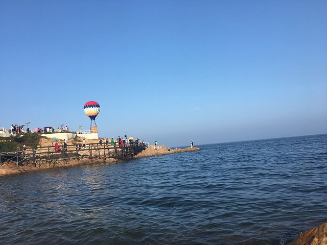

公园位于北戴河海滨最东侧(又名小东山),北临鸽子窝公园，南临老虎石公园，东临大海，交通极为便利。已经成为避暑圣 地北戴河旅游的新亮点。园内主建筑碧螺塔，塔高21米，共分七层，是世界上独一无二的海螺形螺旋观光塔，登塔远眺“秦皇岛外打渔船”的海上风光尽收眼底，令您心旷神怡。早观日出，晚看篝火其乐融融……公园三面环海，风光秀丽，沙软潮平。海洋生物极其丰富，是天然的垂钓宝地。

公园每晚举办沙滩篝火晚会、啤酒沙龙和各类大型演艺活动，以及海上垂钓、海上迪吧、海上美食广场等特色海上项目，都会给您留下美好的回忆。
来吧!朋友，带着您的家人（佳人），邀上您的挚友，率领您的团队，感受公园带给你的浪漫与温馨……
碧螺塔公园位于北戴河海滨小东山，这里三面环海，风光绚丽。碧螺塔为公园的主景建筑，它是以世界独一无二的仿海螺形状而建造的螺旋观光塔，造型新颖别致。有关碧螺塔，还有一个有趣的传说呢。相传秦始皇灭了六国之后，国力强盛。远方有个苑渠国，派人驾了碧螺舟来到秦国，秦始皇在碣石行宫接见了他们，他们向秦始皇描述了开天辟地时候的光景，好像是亲眼所见的一般，又说他们那里的人寿命很长。秦始皇很高兴，便问他们长寿不老的秘诀，他们说东海中有个扶桑岛，岛上有一种树叫扶桑树，九千年才结一次果，人吃后可以长生不老，秦始皇信以为真，让苑渠国的人作向导，派方土侯公、韩终等人率童男童女东渡扶桑岛求取长生不老药。后来，韩终等人的船始终没有回来，只有苑渠国来使乘坐的碧螺舟还留在这片海滩上，也就是今天的碧螺塔。碧螺塔为海滨东山地区的最高点，登塔远眺，一望无际茫茫，大海尽收眼底，使人心旷神怡，碧螺塔公园早观日出，夜听涛声，尤其入夜彩灯辉煌塔形再现，景色秀美壮观。
门票：公园门票100元/张。（网上订购60元）
1.2米以下儿童免票。
公园门票包含项目：
1、大型实景演出《海上生明月》
2、大型异域风情演出
3、登碧螺塔 4、海边篝火晚会 5、脚踏船、橡皮艇
6、海边浴场 7、岸边垂钓、海上平台垂钓 8、沙滩足球、沙滩排球
9、迷你蹦极 10、邓小平钓鱼处拍照、海景拍照 11、拔河比赛
12、观海上日出
餐饮：中餐、烧烤、酒吧
住宿： 木屋、帐篷
基地交通条件：距京沈高速北戴河出口10公里
乘车路线：于海滨汽车站乘坐旅游专线1路即到
沿线景观：奥林匹克大道公园、鸽子窝公园、长城号游船、老虎石公园、联峰山公园、集发观光园、野生动物园.